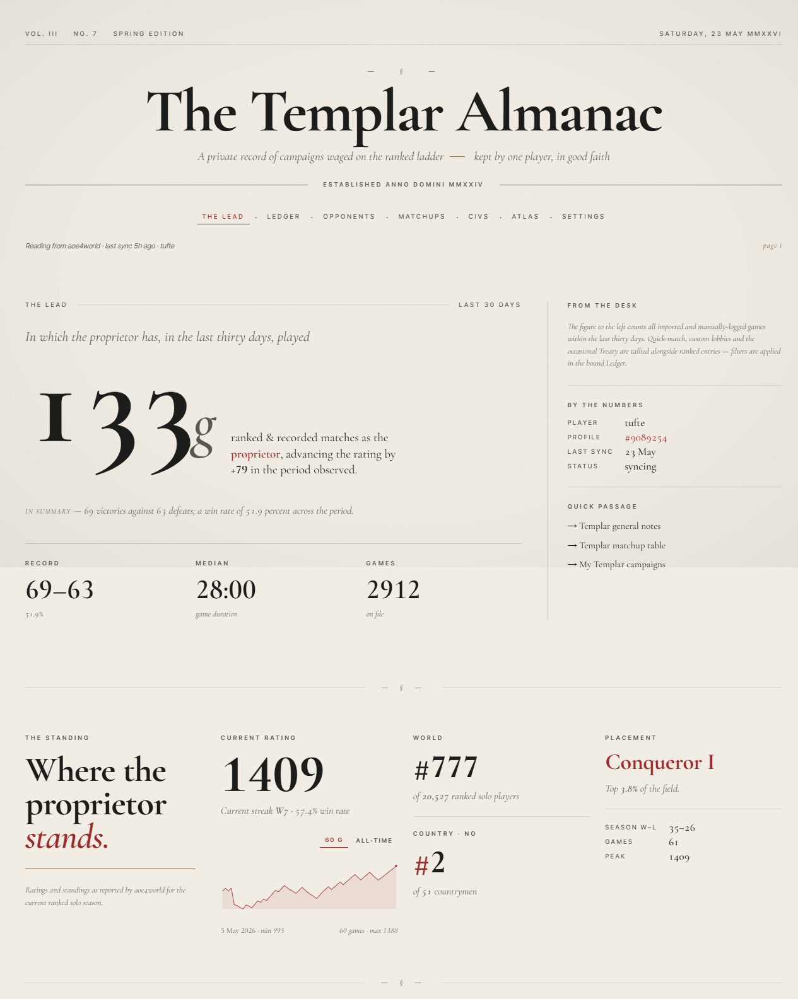
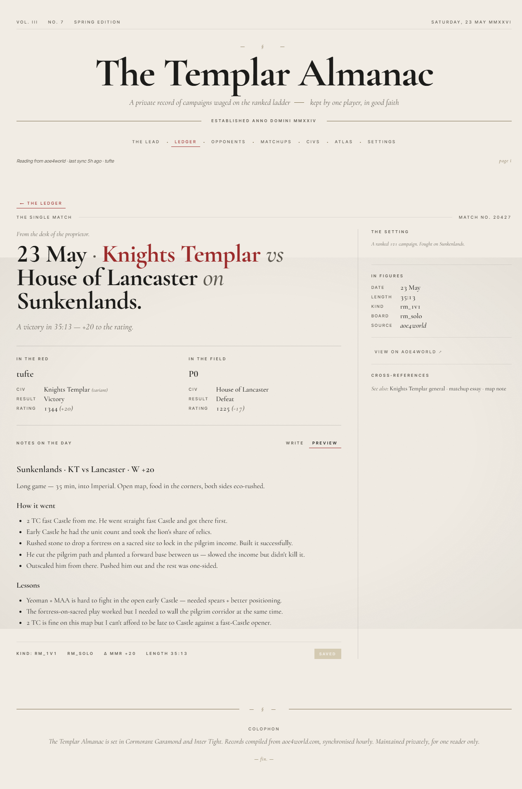
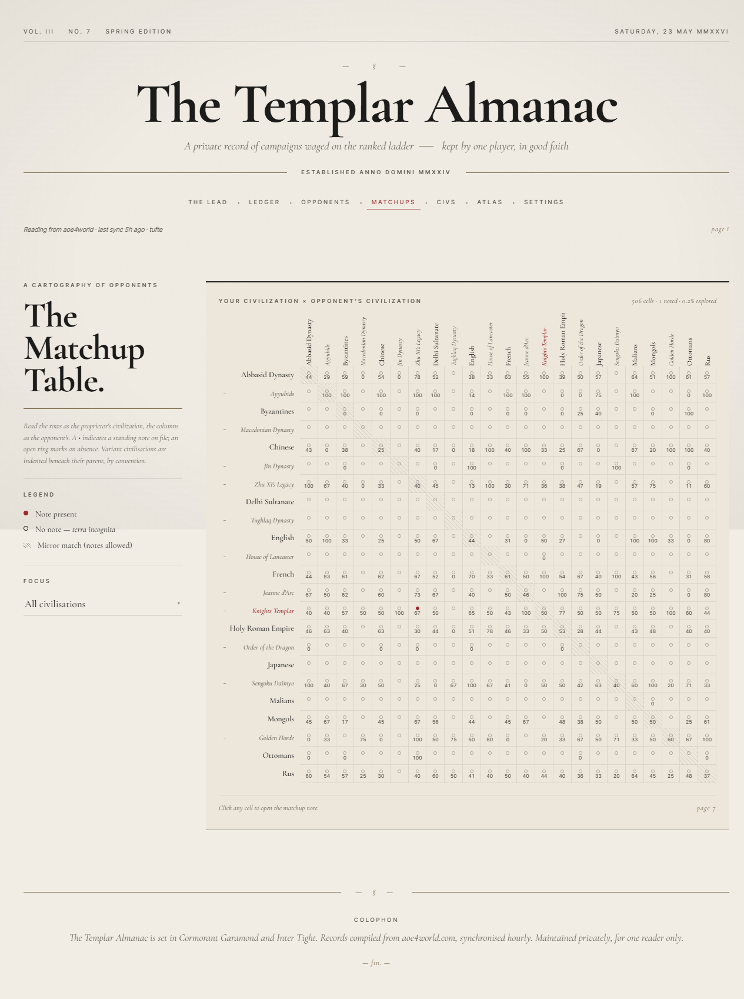

AOE4
Almanac
A local-first, single-player desktop journal for keeping a careful record of your Age of Empires IV career — styled as a leather-bound almanac, not a stats dashboard.
Ranked games are auto-imported from aoe4world.com; custom games are entered by hand; notes hang off civs, matchups, maps, and individual games. Every game gets a markdown pad of its own, every matchup is treated as an ordered pair, and the 23×23 grid never lies about which cells you have actually written about.
The whole thing runs on your machine. No account. No cloud. Just a notebook that happens to know how to read the API.
A campaign journal for the player who keeps notes between sessions — not a dashboard for the player who only watches the rating climb.
The Latest Edition
loading…The Dashboard

A Single Game, With Notes

The Matchup Grid

What’s inside
aoe4world sync
Initial backfill on link, then 60-second polling while the app is open. Rate-limited, single-flight, with exponential backoff. Live progress over Server-Sent Events.
Four kinds of notes
All markdown, all PUT-upsert idempotent: per-civ, per-matchup (ordered pair), per-map, and per-game.
Variant civ awareness
Knights Templar, Zhu Xi’s Legacy, Order of the Dragon and the rest are treated as fully distinct civs — but grouped under their parent in the grid.
Opponents browser
A per-opponent ledger so you can see who keeps showing up across your match history, and how you have fared against them.
Stats & sparklines
Win-loss broken down by civ, map, and matchup. Recent rating history rendered inline.
Local-first
Everything runs on your machine in a Tauri desktop app. No account, no telemetry, no cloud sync. Your notes are yours.